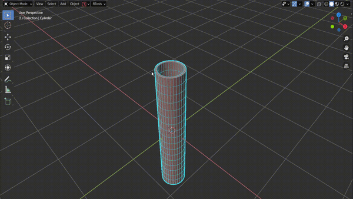
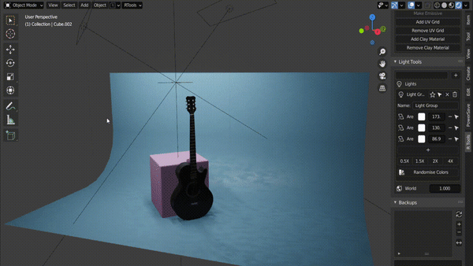
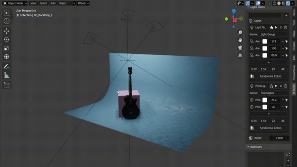
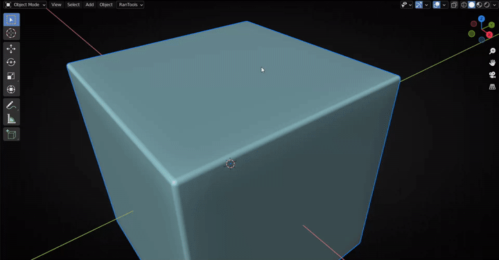
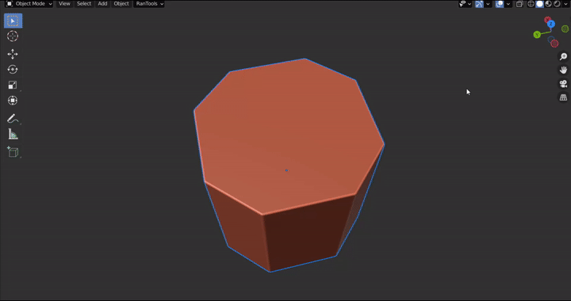
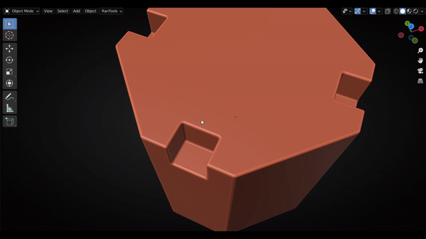
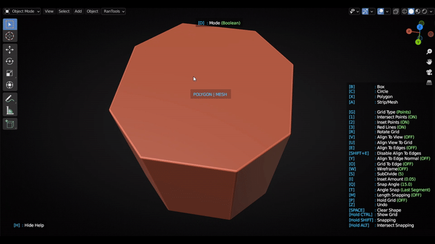
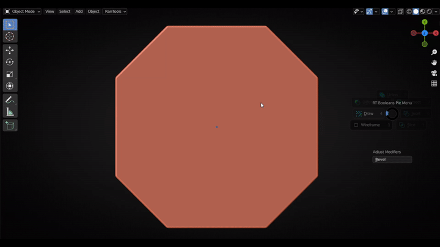
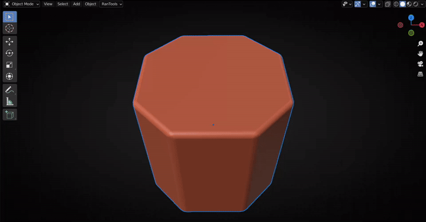
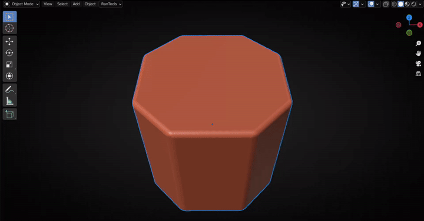

RanTools Documentation¶
Changelog¶
v2.0.0:-¶
Option to align the grid to any vertex normal
Ability to mirror a cutter across a face.
Synchronized modifiers integration.
Quick Modifier Adjust Panel redesign.
New RanTools Project Settings to help manage your projects.
Preferences UI redesign.
Check for updates in the Preferences.
Ability to disable/enable any of the panels.
Auto Save and load of preferences after every install.
Use custom checker texture for Add UV Grid option.
Set bake margins for Bake Tools in the preferences(for export to other software like UE)
Change Boolean Solver in the cutters Recall list.
Dicing fix for Blender v2.93.5
Groups can now be named in the lower-left panel right after creating.
v1.1.0:-¶
New Material Library.
New node mix menu.
Option to add a new bevel modifier after the boolean in P-Cutter.
New favorite modifier presets menu.
Improved modifier adjust modal.
Backups are now more organized.
Ability to use other objects (instead of backup versions) for transferring normals and fixing shading artifacts.
Focus Scroll has been replaced with a much easier-to-use Focus Picker.
There is now a new button to paste the copied color to all the lights of a group.
Ability to clear split normals data.
v1.0.7:-¶
Advanced edge alignment
More Grid customization
Cutters Recall
Separation adjustment in the curve modal
v1.0.6:-¶
New curve adjustment modal.
Ability to add Caps to curves/wires
Improved UI
2 New Modifier Presets
v1.0.5:-¶
Fixed the issue with P-Cutter where aligning to the view without anyactive object led to a crash.
Extract faces modal now allows the user to select disconnected faces.
Added a new ‘Extract faces from solid objects only’ option to preferences.
Information tooltip now follows the cursor on movement.
v1.0.4:-¶
Fixed P-Cutter’s interaction with hidden objects (in local view).
Added ‘Align Normals to Axis’ feature.
Integrated other minor bug fixes and improvements.
v1.0.3:-¶
New ‘Extract>Inset>P-Cutter’ function that combines Extract Faces, Inset rink, and P-Cutter into a single modal.
Fixed a typo in the preferences.
Integrated other minor bug fixes and improvements.
v1.0.2:-¶
Improved the design of the onscreen help, by adding proper alignments and visual cues on key presses.
You may now hold CTRL to change values faster with larger increments.
Empties associated with cables are now set to always be in front, so they don’t disappear within the cable.
Added a toggle to change the default behavior of the ‘Keep shape’.
v1.0.1:-¶
Changed the add folder hint to a more general “Choose Path”.
P-Cutter now remembers the last shape used for drawing.
Removed redundant button from the RanTools menu.
Added a visibility toggle option to the modifier adjust panel for boolean objects.
Installation¶
Edit>Preferences>Addons>Install(Top Right)>Select RanTools.zip file>Install Addon
Shortcut keys¶
Key |
Action |
|---|---|
SHIFT + Q |
Booleans Pie Menu |
SHIFT + W |
RanTools Pie Menu |
SHIFT + E |
Curve Tools Pie Menu |
ALT + X |
Cutters List |
ALT + V |
Recall Last Cutter |
E |
RanTools Menu |
ALT + Q |
Modifier Presets Menu |
ALT + T |
Favorite Modifier Presets Menu |
ALT + E |
View Based Mirror |
ALT+F |
Quick Append Panel |
ALT + Y |
Create Asset |
ALT + L |
Import Asset |
ALT + M |
Material Library |
SHIFT + F |
Quick Material Adjust Panel |
SHIFT + J |
Material Menu |
ALT + O |
Texture Baking Panel |
ALT + B |
Backup Manager |
ALT + C |
Interactive Camera Adjust |
U |
Add Backdrops |
L |
Add Lights |
ALT + M (Shader Editor) |
Node Mix Menu |
Camera And Render Tools¶
Interactive Camera Adjust¶
Click Interactive Camera Adjust in N-Panel or use shortcut ALT+C to invoke Camera Adjust.

C : Cycle between all available cameras in the scene. F : Enable Focus Scroll. Once activated use the mouse scroll wheel to change the focus object.LMB or one of these keys to confirm and Exit Focus Scroll. D : Toggle Depth Of Field for the selected Camera. It should be turned on if you use the focus scroll else effect will not be visible. A : Adjust Aperture (degree of blur) for the depth of field. Z : Zoom in and out by changing the sensor width of the camera (does not change the focal length).
Render Aspect Ratio¶
Click any button to set the output resolution (width:height). Hold down CTRL while clicking any button to set the output resolution (height:width) Example If the current output resolution is 1920*1080, clicking the 2:1 button will set the output resolution to 1920*960. If you hold down CTRL while clicking, the output resolution will be set to 2160*1080.
Render Resolution¶
Click any button to multiply the current output resolution by that number. Hold down CTRL to divide, keeping the aspect ratio the same. For example, if the current aspect ratio is 16:9. If you click HD, the render resolution will be set to 1280720, but if it is 9:16, the render resolution will be set to 7201280. Similarly:
FHD :1920*1080 or 1080*1920
2K :2560*1440 or 1440*2560
4K :3840*2160 or 2160*3840
It works for any aspect ratio
Focal Length¶
It’s as simple as it sounds, it sets the focal length of the scene’s active camera.
Add Backdrop¶

Scroll Mouse Wheel To Switch Backdrops. Press A to change alignment of the backdrop. There are two alignment options:
Object
Camera
Click LMB to confirm and enter Adjust Mode. Scroll to adjust the bevel segments. Move the mouse on the horizontal axis to adjust the bevel width. Press C,R or M to change color, roughness or metallicity respectively.
Add Lights¶

Similar to backdrops To Backdrops, use Mouse Wheel to switch the lights and A to change the alignment Click LMB to confirm To Confirm and enter Adjust Mode. Move the mouse on the horizontal axis to adjust Light Strength.
Set Render Path¶
Creates a directory with the file name and output path is set in the output settings. Also adds a file output node to the compositor.
Setup Denoising¶
Enables Denoising Data (Cycles) and add Denoise node connected right after render layers node
Batch Rendering¶
Create render batches and render them all with just one click. All outputs will be automatically saved to a folder created in the same directory as the blend file. The name of the folder will be <Filename> <Render Engine> Example
In the scene shown above, i have created 4 render presets(shown below) in the batch render section.
|
|
|---|---|

Clicking on Render All button in render menu will produce following 4 Outputs
|

Images Rendered Using Eevee Will Be Saved Into <FileName Eevee> Directory while Images Rendered Using Cycles Will Be Saved Into <FileName Cycles> Directory Note:- While only a few settings are shown under each render preset, almost all render-related settings are saved when you create a preset, so if you want to change another setting, you can just click on the preset, whereupon all the settings will load and you can change anything you want and click the “Update” button (up arrow).
Some batch render specific settings are explained below:
Engine : Render engine to use.
Camera : Camera to use for rendering
Clay : Whether to use clay material or not (clay material is added to all objects in the scene and removed after rendering)
Clay color (only visible if clay is activated):Color of the clay material Wireframe: whether to overlay the wireframe or not
Mix : mixing factor by which the normal render is mixed (overlaid) with the wireframe (a setting of 0 means the normal render is not visible at all, as shown in example 1, and a setting of 1 means the normal render is visible, as shown in example 3)nd if set to 1 normal render will be visible as shown in example 3)
Note:- Camera Location and rotation are also saved when you create a preset. So you can use the same camera to get renders from different locations and rotations.
Curve Tools¶
Press Shift +E to access Curve Tools Pie Menu (or use the Curve Tools section from the N-panel)

Create Cable¶
Select Create Cable from the pie menu (or from the N-Panel ).
Click on any 2 points to create a cable. Press C to switch between NURBS and BEZIER curves. Hold CTRL while Clicking to Snap to the center of the face(Average of all vertex coordinates) Hold SHIFT while clicking to snap to the center of the Bounding Rectangle.
There are 2 (3 for NURBS) empties attached to each created cable to make it easier to manipulate.You can move any empty to change position and shape of the cable.
 Note:- When You Create a Cable snapping mode is automatically switched to Face Mode,so you can reposition the empties easily by holding down CTRL
Note:- When You Create a Cable snapping mode is automatically switched to Face Mode,so you can reposition the empties easily by holding down CTRL
Curve Modal¶
From the RanTools menu (E) select Curve Adjust(or Press E followed by C for faster access) to start the curve adjustment modal.
Resolution¶
Hold CTRL and use the mouse wheel to change the curve resolution.
Radius¶
Press R to toggle radius adjustment and move the mouse left or right to change the radius.
Tension¶
Press T or hold down ALT to toggle Tension adjustment and move the mouse left or right to change the tension.
Press S or D to restrict the adjustment to one of the endpoints. Press A to adjust both(default)

Tilt¶
Press Q or W to adjust the tilt of A and B point respectively.
Note: Tilt might not be noticable if the curve is just a simple Cylindrical shape.
Extrude (Flat Cables):¶
Press E to toggle Extrude adjustment and move the mouse left or right to change the Extrusion amount. Useful for creating flat cables.
Fill¶
Toggle end fill using the F key.
Separation¶
Press B to toggle Separation adjustment and move the mouse left or right to change the separation amount. Very useful if you are using caps and the cable is intersecting with it.
Caps¶
Turn on cap picker by pressing C and click on any object to use it as a cap.Press U to scale and O to offset the caps.

Select Empties¶
Empties are hidden by default so that they dont clutter the viewport but if you wont to change the curve shape and move the empties you can unhide and select them from the curve modal itself by pressing Z or X .
Multiple Wires¶
With any curve selected, click the multiple wires button (from either Pie Menu or the N-Panel ) to convert the curve to multiple wires.
Use the following buttons to change wire parameters:
F : Switch between parallal and radial wires
G : Change axis for parallel wires
V : Adjust Twist of wires
E : Wire Radius/Offset
R : Radius of individual wires
Mouse Scroll : Number of wires

Everything is non-destructive, i.e. you can change any parameter of the wire at any time using the Curve Adjust Modal
Simulate Curve/Wire¶
With any curve/wire selected, click the Simulate Wire button to simulate the cable under the effect of gravity. The new simulation V2 Also interacts with other collision objects. (You can switch to V1(non-interactive) via the P- Cutter Panel or RanTools Dropdown menu to the right of the View,Select,Add,Object menus). Just make sure that the objects you want the cable to collide with also have collision enabled (if the cable is just sliding instead of staying on the surface, make sure the friction of the objects is set to a high value like 15-20).
During simulation, press D to increase wire length (hold Alt to decrease) and C to increase Collision Distance (hold Alt to decrease). Note: This removes the empties associated with the curve, making the curve destructive; however, you can simulate the curve again using the same procedure.
Edge To Curve¶
In edit mode, select the edges you want to convert to a curve and click Edge To Curve (pie menu or N-Panel ).Selected edges will be duplicated and converted to curves.You can change various parameters in the lower left panel. Note:-In Edit mode, this option is available under the Edit mode pie menu (since Shift+E is already occupied by Blender), which is accessed by Shift+Q.

Draw Cables¶
In Object mode, click Draw Cables. A new Curve object is created and you enter Edit mode with the Draw tool enabled and can begin drawing curves on surfaces. Surface Offset and other settings can be changed using from the topbar menu.

Put On Curve¶
Put any object on any curve.First select the object you want to place on the curve, and then select the curve you want to place the object on and click put on Curve. An array modifier and Curve Modifier are added to the object.

Custom Cables¶
Holding Down CTRL while clicking Put On Curve will set array length to fit curve
Material Tools¶
Material Library¶
Press SHIFT+M to bring up the Material Library Panel. Simple type the type of texture and press enter to search. All online materials from ambientCG.com matching the search query will be displayed on the left side and all the materials already downloaded will be displayed on the right side. Select the material and quality to download and load the textures.

Quick Material Adjust Panel¶
Press SHIFT +F to open Quick Material Adjust Panel. In this panel, you can quickly adjust the most commonly used settings, copy values across different materials, and add adjustment nodes. If a value is derived from another node, you will see a lock icon next to it, clicking the lock icon will insert an adjustment node in between and unlock the slider. You can then change the values with the slider. Adjustment nodes are nothing but Math nodes or Hue-Saturation Adjustment node in case of color inputs.

The Nodes and inputs visible in the Quick Material Adjust Panel can be customised from the preferences.

To make it easier to add any node to QAM there are two buttons in the N-Panel of shader editor.

Add Selected Node To QMA : Select the node you want to add to QMA and click this button, the node will be added to QMA. But it will not be displayed unless you also add some sockets of that node to the socket list. So when you click this button, all the socket names will be displayed in the field below. You can then edit and remove the sockets you don’t want in the QMA and click the button below. Add Sockets To QMA: Adds sockets from the field above to the socket list.
Material Transfer¶
From the pie menu Shift+W, select Material Transfer. You can then click on any object to pick the material, and click again on any object to drop the material.
Material Change Menu¶
Press SHIFT +J to access the Material Change menu and Quickly change materials on objects. Also works in Edit Mode. Hold CTRL while clicking to add an emissive copy of the material.

Hold SHIFT to add a copy of the material. In the following example, the same material is assigned to the right sphere, while a copy of the material is assigned to the left sphere ( holding SHIFT)

Hold ALT to open the Quick Material Adjustment for the material.

Click +New Material to create a new material

Make Emissive¶
In Edit Mode with some faces selected click make emissive (Alt+G) to replace the material with an emissive copy of it. (similar to Shift-click in Material Change Menu).
Setup Materials¶
Tired of searching for textures one by one? No more: RanTools is here to save the day. Just select a directory and click Setup Materials and RanTools will find all pbr material textures available in the directory or one of its subdirectories and set them up for you. e.g. if you downloaded all your materials in the download folder, you can select that folder and click “setup materials” and all materials will be created for you.
Add UV Grid¶
Just select the object you want to add the checker texture to and click ” Add UV Grid”. You can adjust the scale of the texture by moving the mouse on the horizontal axis. Click Remove UV Grid to remove the checker texture

To quickly toggle Checker Texture you can use the pie menu(Shift+W).
Add Clay Material¶
Add clay material to all selected objects. By default, transparent material is added to all objects that have transparency so that they are not visible in the render.
If you want to add clay to all objects, regardless of whether they are transparent or not, hold down CTRL while clicking Add Clay Material.

Node Tools¶
Node Mix Menu¶
Mixing 2 Materials¶
You can mix any 2 materials using any type of masks(Edge Masks,Noise,Musgrave or height maps from any of the 2 materials)
Simply select the last node before the material output node and press ALT+M to bring up the Node Mix Menu and under the Other Materials sub-menu select the 2nd material you want to mix and then select the type of mask you want to use.
Edge Mask Example:
Height Mask Example(Using Height Map as Mask):
Mix Imperfections¶
Mix Imperfections Maps with any texture node by simply selecting the node and then selecting the imperfection type from the node mix menu.
Plug Imperfections¶
You can also directly plug a imperfection map instead of mixing it by holding down ALT while seletecting the imperfection type.

Add Node¶
RanTools comes with some usefull NodeGroups listed below:
Color Adjust:

Ground Mask:

Grunge Mask:

You can also plug in another mask like an edge mask or a noise texture into the 1st socket where you want the grunge to appear.
Edge Mask |
Noise Texture |
|---|---|
|

Edge Mask:
Worn Edge Mask:

Edge Mask Nodes use bevel node which does not work in eevee so if you want to use these masks in eevee you can bake them using Bake Bevels in texture bake panel.
Make it Flow!¶
Adds a Flow map Node to selected nodes.Can be used for creating moving textures(like lakes,oceans).

Also works for multiple nodes

Speed controls how fast the texture moves and distorion controls how much the texture moves. In above examples solid colors are used for flow maps thats why flow is only in one direction at a time but you can use an actual flow map to define how the image moves
Texture Bake Tools¶
Bake Textures¶
Simplifies the process of baking textures to just one click. Select the objects you want to bake textures for, and select the type of textures you want to bake, and click Bake Textures. The selected textures are baked for all selected objects.

Set the resolution and render samples as per you requirements. The larger these values are, the longer it will take to bake. When exactly 2 objects are selected, the “Selected to Active” option will be visible. When enabled, the textures from the selected object will be baked to the active object. This works the same way as the Blender’s internal “Selected to Active” option.
Bake Bevels¶
Accessible from the N-Panel or by pressing ** ALT +O**. Set the bevel width and click Bake Bevels. The bevels will be baked and added to the materials. It will also find any empty normal sockets in the material node tree and add the bevel map. If you are not happy with the bevel width, simply re-bake and the bevels will automatically update. Make sure objects are uv unwrapped before baking bevels.
Holding down SHIFT (Smooth) or ALT (Worn) while clicking Bake Bevels will create an edge map that you can use to create some edge wear effects.
You can also hold down CTRL + (SHIFT or ALT) to bake a bevel map and an edge mask at the same time.
You can also save materials created with edge masks and append them to any new project and bake edges masks again to update the edge masks.

Light Tools¶
Create Light Groups¶
Select the lights you want to group and click the + button to create a group. All lights in the group can be manipulated together.Groups can be soloed and their light intensities can be increased or decreased proportionally.

Button |
Action |
|---|---|
Star |
Solo Group |
Arrow |
Select all lights of the group |
Cross |
Delete the group but keep lights in the scene |
Trash |
Delete the group with the all the lights in it |
+ |
Add Selected Lights to this group |
- |
Remove this light from this group |
Selected lights are highlighted with blue icons and the active light is highlighted with a yellow icon

Randomise Colors¶
Use the 1/2x,1.5x,2x and 4x buttons to multiply the light intensity of all lights and use the Randomize Color button to randomly change the color of each light.

Backup Tools¶
Create and manage backup copies of objects from one panel.
Create Backup¶
To save a backup copy of an object, simply select the object and click Create Backup in the Backup Tools panel (N panel or keyboard shortcut ALT +B). You can also specify a name for the backup copy in the field above. If you leave the name blank, the object name with the current time suffix is used.
Replace with Backup¶
The current object is replaced with a backup version, which means that the current object is added to the backup list and the backup object is added to the scene at the same location. All child objects are also transferred to the backup object. If you hold down CTRL while clicking Replace, a copy of the backup object remains in the backup list.

Add Backup¶
Add a backup version to the scene in the same location. While ‘Adding’ children are not transferred to the backup object.After adding a backup, it remains available in the list of backups; when you add it again, it is moved to the current location of the object. If you add a backup and make changes to it, and then add it again from the backup list the changes will be there. If you add a backup and make changes to it, but still want to keep a copy to hold down CTRL while clicking the Add button.
Normal Transfer¶
Transfer normal from a backup version or boolean cutters to the object to fix shading artifacts.
Using Backup version: In Edit mode, select the face to which you want to transfer the normals, and then in the Backup list panel select the version you want to use as the source normal. Then click the Normal Transfer button and the normals will be transferred to the faces with the data transfer modifier.

Using Other Object: Hold ALT while clicking the Normal Trasfer button to use any other object as the source normal. Turn on Flipped in the lower left panel if normals are reversed.

By default, the modifier is applied after the transfer. If you want to keep the modifier hold down CTRL while clicking the button. Mapping Method can be changed from the popup in the lower left corner

Random Tools¶
Mirror¶
Shortcut : ALT+E View Based Mirror . Mirror Axis is selected based on the viewing angle. It also tries to guess whether flipping is required based on the number of vertices and density, but if the guess is wrong, you can always hold down the Alt key and press X, Y, or Z to toggle flipping for those axes


Import Asset¶
ALT+L

If you click on the collection name, you can scroll with the mouse to select the asset
You can also create placeholders that are recognised and imported by the import function without having to select them in the import panel. For example, if you have a collection named “Plant”, you can place an empty named “Plant” anywhere in the scene, and when you select that empty and you press ALT +L, plants are immediately imported and you can scroll to choose which ones you want to have.

Match Viewport and Render Visibility¶
Click to adjust the render visibility of all objects in the scene to match their viewport visibility. CTRL to adjust the viewport visibility to match the render visibility.
Origin To Geometry¶
Set Origin of the selected active object to the center of the evaluated object i.e. considering all modifiers.
Origin To Bottom¶
Send origin to the lowest point of the object.
Group It¶
Group and parent all selected objects to a box empty. It makes them easier to maintain.
Snap And Snap To Ground¶
Snap : Snap objects to whatever is the first object below them. There are 4 types of snapping(Hold CTRL or SHIFT or ALT or nothing).Try which one works best for you. Snap to Ground: Snap objects to objects below them which are marked as ground.

Dice Remesh¶
Uses horizontal and vertical dicing to create better topology
Slice¶
(Experimental) Slice the selected object in using Boolean Modifier.
Create Tube¶
Adds a non-destructive tube to the scene. The tube is made entirely with modifiers and can be manipulated under the curve Tools sections.

Add Lattice¶
Sets up a lattice enclosing the selected object in just one click.
Taper¶
Taper objects Press X or Y to adjust those axes individualally
Place Copies¶
Select the object you want to make copies of, then click anywhere to place a copy. Exit to cancel. Enter or right click to confirm

Add Plane¶
With a difference boolean selected click the Add Plane Button to add a plane in it’s place.

Modifier Presets¶
Stack Presets¶
Save complete modifier stacks as presets so you can add them at any time with just one click.
The above example uses the active property (the value you set immediately after adding the preset) Screw Offset ( tube radius ). If you want to use the active property, you need to select the modifier you want to use (meaning it should be active (blue outline)), and while clicking “Create Preset”, you need to hold down the Ctrl key. This is very useful for things you use very often (like beveling,solidifying or shrink wrapping ). You can add presets that you use very often to the Quick Favorites menus for faster access. I usually like to use the bevel modifier with weighted normals, so I created a preset for it and added it to the Quick Favorites to quickly add a bevel to any object. Note that I selected the bevel modifier before clicking “Create Preset” to use it as an active property.
Another very useful feature is that if you select an object when adding a preset, all object fields are set to use the selected object (modifiers are added to the active object). This is very useful for curves, shrinkwraps, or circular arrays.

Single Modifier Presets¶
Presets for individual modifiers are also possible. They can be created using the Create Preset panel. Enter the name under which you want to save the preset and select the modifier from the list for which you want to create the preset.Individual modifiers by default use active properties so you dont have to hold down CTRL.
Shrinkwrap with wrap method set to Project
Shrinkwrap with wrap method set to Tangent Normal

Interactive Modifier Adjust¶
Accessible from SHIFT +Q pie menu Allows interactive adjustment of modifier values. Move the mouse along the horizontal axis to adjust values. Press A to cycle between adjustable values.

Modifier Adjust Panel¶
Accessible via SHIFT +W pie menu. Displays only commonly used properties of modifiers. Option to hide boolean modifiers. Supports multiple objects, making it easier to copy values between modifiers on different objects.


Extract Faces¶
Click and drag to extract faces from the visible geometry.Right Click to confirm. Escape to Exit. Hold down CTRL to deselect.
Press C to use circle select for faster selection.

Press E to expand the selection to all the coplanar faces.
Extract->Inset->P-Cutter¶
Hold down CTRL while clicking to use Extract faces,Inset Shrink and P-Cutter combined modal.
Extract->Inset->Solidify¶
Hold down SHIFT while clicking to use Extract faces,Inset Shrink and Soldifiy combined modal. 
Inset Shrink¶
Shrink faces using insetting.
Align View to Face¶
Better align view to face. Comparison between blender’s align to face vs RanTools align to face:
Blender |
RanTools |
|---|---|
|
|


Circular Array¶
Add Circular Arrays with just few clicks. Select an object and click circular array button to add a circular array. Change Count,radius and axis in the lower left panel.
If you want to array arround another object first select the object you want to array and then the object you want to array arround and click circular array.

Instance Based Circular Array¶
Create a circular array by instancing a copy of the object on vertices of a circle. These copies can not be used for booleans but if you want you can convert the instances into real objects using Make Instances Real feature. Major advantage of using instance based array is less memory usage.
Project from View with correct aspect ratio¶
By default when we use Project from view and the image in image editor is not a square the UVs come out stretched this can be solved using Project from View from RanTools. This option is present in the UV menu(U).
Blender’s Internal |
RanTools |
|---|---|
|

P-Cutter¶
Launch P-Cutter modal by clicking ‘Draw’ from the P-Cutter Pie Menu(Shift+Q)
Drawing Phase¶
Shapes¶
Box(B)¶
Draw rectangle shapes. Hold down ALT to draw from the center.Hold down shift to use snapping and draw square.

Place Grid¶
If you dont want to use the grid as a reference and dont want to snap to the points you can toggle “Hold Grid” using ‘P’ Key so the grid wont disappear if you release CTRL key. You can place the grid on any other face by simply hovering over that face and pressing CTRL key.

Grid Types¶
Two type of grids are available which can be set in the preferences. You can also toggle between the two using G key.

Inset Points:¶
Insets are showen to help you draw precisely along the edges. You can increase the Inset amount by pressing I and decrease by holding ALT while pressing.

Resize and Subdivide¶
The Grid can be resized using the up and down arrow keys. Or by scrolling the mouse wheel up and down while holding down the CTRL key.Grid subdivision levels can be changed using the S key.Press S to increase subdivision level.Hold down Alt while pressing S to decrease subdivision level.

Rotate¶
Grid can be rotated using the ‘R’ key. To rotate in the oposite direction hold down the ALT key while pressing ‘R’. To rotate by smaller increments hold down the SHIFT key.


Align Grid To View¶
Press V to toggle View Alignment mode. Grid will be aligned with the view and will be placed near the active object.If there is no active object you wont be able to draw(as the grid needs some object to decide its location) in this case you can simply hover over any object and press CTRL to use that object. To reposition the grid to a new location and angle just hold down ctrl(or just click CTRL if Place Grid is ON)

Align To Edge¶
Before using Align to Edge you need to place the grid once by hovering over any face and pressing CTRL.
Rotation:¶
Align the grid rotation to any edge by Holding down Alt and right clicking near the edge.A White line will be placed on the edge to highlight that it is active.
Location:¶
Align grid location to an edge (or multiple edges) by holding down SHIFT and ALT and right clicking near the edge.All edges will be highlighted with green and grid will be placed at the center of all the edges.


Disable¶
Press SHIFT+E to disable edge alignment.
Snapping¶
Angle Snapping¶
Use angle snapping by holding down SHIFT while drawing. Press Q to increase the snapping angle or hold down ALT while pressing to decrease it. You can toggle between snapping to the Grid angle and the last segment using T.
Intersect Snapping¶
Use Intersect snapping by holding down ALT while drawing. Segment’s endpoint will snap to the intersection point of Red Lines or any other segment of the polygon. When combined with angle snapping it can be used to quickly draw precise shapes.
UNDO¶
Press Z to remove the last vertex from the drawing. Press Spacebar to clear the shape
Cutting Phase¶
Booleans Modes:¶
U : Union¶
Press U to change the boolean mode to Union

D : Difference¶
Press D to change the boolean mode to Difference 
I : Intersect¶
Press I to change the boolean mode to Intersect 
S : Slice¶
Press S to change the boolean mode to Slice

C : Inset¶
Press C to change the boolean mode to Inset

Shape Adjustments:¶
Thickness¶
Press T to adjust the thickness/depth of the shape.
Vertex Bevel¶
Press V to add a vertex bevel to the shape.
Bevel¶
Press B to add an edge bevel to the shape.

Mirror:¶
Press X,Y or Z to add a mirror along that axis. By default the mirror object is set to the object being operated on. You can change the mirror object to the cutter itself by pressing O. Hold ALT while pressing X, Y or Z to flip that mirror axis.

Mirror(Object vs Self):

Array:¶
Linear Array¶
Press E to add a linear array to the cutter. Press X,Y or Z to change the array axis. Scroll mouse wheel up or down to increase or decrease the array count.Move your mouse left or right to change the array offset.

Linear Array from Middle¶
To add an array from the middle first you have to add a mirror with object set to cutter(self) then add the array by pressing E. Use the same axis for array as you used for the mirror.

Radial Array¶
Press R to add a radial array. Scroll mouse wheel up or down to increase or decrease the array count.Move your mouse left or right to change the radius.
Press Q to change the array center(Draw Location/Grid Center).

Press F to change the array axis

Cutters Recall¶
Press ALT+X to bring up the list of available cutters. Hover over any name to unhide that cutter.Click on any name to enter back into the P-Cutter modal(or enter edit mode if cutter is destructive(modifiers applied)) and make changes. Press A while hovering over any name to apply that cutter modifier. Or Press X to delete that cutter.

You can also press ALT+V to quickly recall the last cutter.